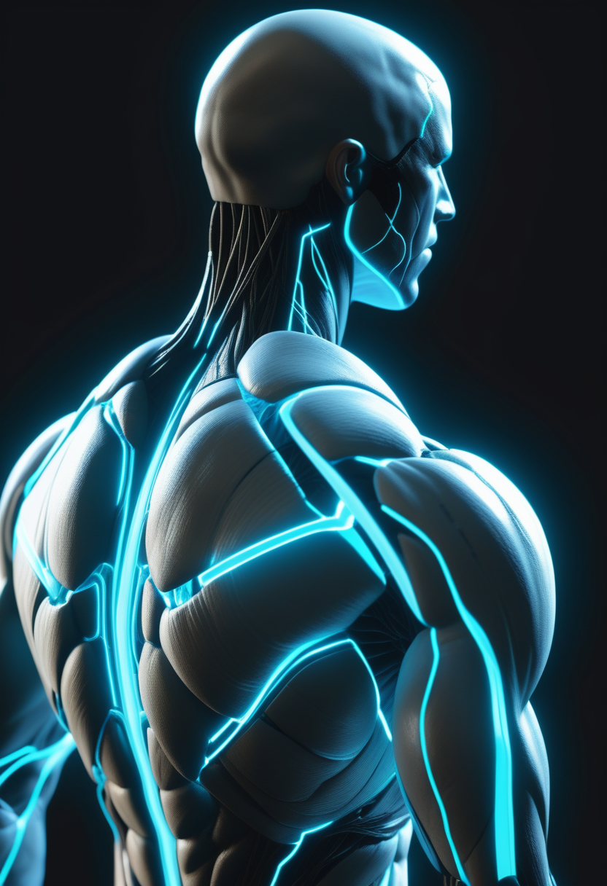
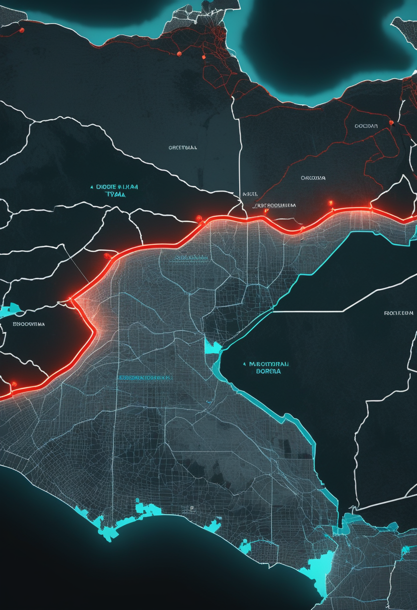

水曜日の便り。WHOのパンデミック・ハブが『24時間以内に新たな健康危機を検知する』という2026〜2030年戦略を公表した同じ週に、ECDCが更新したDRCエボラの数字は確定8,978例・死亡4,336人に達した。基盤の章ではこの数字の動きと、米CDCの入国制限延長、ロシアの研究所職員の謎の肺炎死、ニジェールのジフテリアと米フロリダのデングを届ける。自由の章では視線とアイコンタクトが乳児の学習を左右するという研究と、Precision Neuroscienceの資金調達を。畏敬の章では天問二号の小惑星伴飛行、ウェッブが見た溶岩惑星の大気、CERNのLHC長期停止を。命の章ではアピテグロマブの運動機能データと、インドの乳児の遺伝子治療を。美の章では意識のアップロードとAIの意識論を取り上げる。
WHOのパンデミック・疫学インテリジェンス・ハブ(ベルリン)は10月12日、新たな健康危機を発生から24時間以内に検知・把握することを目指す2026〜2030年戦略を公表した。柱は監視強化・検知の迅速化・分析に基づく意思決定・デジタル基盤の4つで、公開情報をAIで常時監視するシステム『EIOS』が中核になる。一方、同じ週にECDCが更新したDRCのエボラの数字は確定8,978例・死亡4,336人(10月10日時点)で、前号(第106号)のWHO集計(10月6日時点・8,728例・4,205人)から250例増え、影響保健区域も64から65へ増えた。米CDCは10月11日付でDRC・ウガンダ・南スーダン滞在者への入国制限をさらに30日延長したが、ウガンダは自国の流行終息を宣言済みで対象に残り、10月6日に初の輸入例が出たケニアはむしろ対象外のままという非対称が残る。『24時間以内に検知する』という将来の目標と、『いま誰を止めるか』という現在の線引きが、同じ週に並んで示された形になる。

FDAが9月11日に承認したScholar Rockのアピテグロマブ(商品名Isembyld)は、SMAで初めて筋肉そのものを標的とする治療。第3相SAPPHIRE試験では、既にSMN2標的治療(ヌシネルセンまたはリスジプラム)を受けている2歳以上の患者に10mg/kgを4週ごと投与し、52週時点でHFMSE(運動機能評価)がプラセボ比+2.2点改善、3点以上の改善に達した割合は34.2%対13.5%だった。前号で触れた骨折リスクの増加は添付文書の注意喚起として維持されている。
生後5週でSMAと診断されたインド・ベンガルールの乳児が、生後7か月で遺伝子治療を受けた。費用の一部はクラウドファンディングでまかなわれている。前号で触れたインド最高裁の『SMA恒久基金』案の議論とあわせ、高額治療へのアクセスという同じ課題を個別の事例として映している。
フランスの研究チームが、カメラとAIで赤ちゃんの動きを解析し、SMAなどの運動障害を見つけやすくする手法を開発している。フランスではすでにSMAの新生児スクリーニングが行われており、この手法は遺伝子検査を補う役割が想定されている。
ヌシネルセン(スピンラザ)やリスジプラム(エブリスディ)を使った後にゾルゲンスマへ切り替えた子どもでも、臨床的に意味のある運動機能の改善が見られたとする単施設の後ろ向き研究が報告された(Neuromuscular Disorders誌)。改善幅は最初からゾルゲンスマを使った場合より小さく、早く治療を始めるほど結果が良かった(報道日は要確認)。
SMAの治療地図は『どの薬を使うか』だけでなく『いつ切り替えるか』『どう早く見つけるか』にまで広がっている。アピテグロマブの具体的な効果データは、上乗せ治療としての位置づけをより明確にした。
Nature Communicationsに10月8日付で掲載された研究は、大人の話し手からの直接的なアイコンタクトが、乳児がどの単語を学習対象として選ぶかを導いているらしいことを示した。視線が単なる注意の副産物ではなく、学習の『スイッチ』として働くという解釈になる。視線入力デバイスそのものの話ではないが、どの視線が意図を表すのかという、視線をインターフェースとして扱う設計の基礎にあたる知見である。
脳表面に薄膜電極を置く低侵襲BCIを開発するPrecision Neuroscienceが、2.5億ドルの資金調達を終えたと報じられた。同社の『Layer 7』は、最大30日間の埋め込みでの記録・刺激に限りFDAの510(k)認可を既に得ている。前号(第104号)で報じた『ヒト中枢神経系の地図』公開・植込み100人超に続き、商用化に向けた資金基盤が整った形だが、恒久的な埋め込みそのものへの承認ではない点は変わらない。
視線入力によるコミュニケーション機器『Tobii Dynavox』を傘下に持つDynavox Groupは、第3四半期報告を10月21日7時30分(中欧時間)に公表する。同社は2026年4月にSR Labs Healthcareを買収済み。前号で『視線追跡企業Tobiiの決算日は10月22日』と触れたが、Tobii Dynavoxの親会社Dynavox Groupは別法人であり、決算日も1日違う。両社を混同しないよう整理しておく。
視線が学習の仕組みに食い込んでいるという基礎研究と、低侵襲BCIの商用化が進む応用研究が、同じ週に並んだ。視線入力を使う側にとっては、どの会社がどの決算日かという地味な整理も実務的に効く。

ECDCの集計では、DRCの確定例は8,978例、関連死亡は4,336人(10月10日時点)に達し、同日だけで新規確定64例・死亡21人が報告された。影響を受けた保健区域は7州65区域(10月10日時点)で、前号時点の64区域から1つ増えた。イトゥリ州が累計確定例の約74.5%を占める。米CDCは10月11日付で、DRC・ウガンダ・南スーダンに滞在した外国籍者への入国制限をさらに30日間延長した。ウガンダは自国の流行終息を宣言済みだが、DRCからの陸路流入が続くリスクを理由に対象へ残り、10月6日に初の輸入例と死亡を確認したケニアは対象に入っていない。ブンディブギョ型ウイルスには承認されたワクチンや治療薬がまだない。
WHOのパンデミック・疫学インテリジェンス・ハブ(ベルリン)は10月12日、2026〜2030年の戦略文書を公表した。柱は①監視システムの強化②技術革新による検知の迅速化③分析に基づく意思決定④信頼できるデジタル基盤の4つ。公開情報をAIで常時監視するシステム『EIOS』が中核になる。ハブは2021年にベルリンで設立され、160以上の加盟国・190以上の機関と連携している。
WHOは10月10日付の発生情報(DON620)で、イルクーツク抗ペスト研究所の職員が重症肺炎で死亡した事例を報告した。当初は肺ペストが疑われたが、検査でペストもその他の高危険度病原体も確認されず、死因は『病因不明の肺炎』に分類された。WHOは、継続的なヒト-ヒト伝播の証拠は確認していないとしている。研究所由来の感染が疑われた事例であり、実験室バイオセーフティの観点からは追跡の価値が残る。
ニジェールでは疑いジフテリア949件・死亡36人(72保健区のうち50区、9月27日時点)が報告されている。米フロリダ州では、海外渡航歴のない国内感染のデング熱が296例に達した(10月3日時点)。また10月1日には、コンゴ民主共和国で活動していたMSF(国境なき医師団)の医師がエボラ陽性となり、オランダのライデン大学医療センターへ搬送・治療されている。複数の感染症が同時に異なる大陸で動いている週となった。
確定例だけでも2日で250例増えるペースが続く一方、WHOは『24時間以内の検知』を次の5年の目標に掲げた。目標と現実の距離は、現場の接触者追跡がまだ新規例の7割を捉えられていないという前号の指摘がそのまま物差しになる。
中国航天科技集団は10月13日、探査機『天問二号』が小惑星2016 HO3との交会に成功し、サンプルリターンに備えて伴飛行探査を実施していると明らかにした。探査機は2025年5月に打ち上げられ、2026年7月初めに目標小惑星へ到達。今後サンプルを採取して地球に帰還させたのち、メインベルト彗星311Pへ向かう計画である。
ウェッブの中間赤外観測で、約154光年先の岩石惑星HD 3167 b(公転周期約0.96日)の昼側が予想より低温だとわかり、大気があることを示す証拠となった(The Astrophysical Journal Letters)。大気の成分はまだ不明。別のチームは、白色矮星を回る木星サイズの惑星WD 1856 bの通過(トランジット)を観測し、予想より温かいことを10月6日に報告した。白色矮星をめぐる惑星の実例が、今週は2件積み上がったことになる。
CERNは大型ハドロン衝突型加速器(LHC)の切り離し作業を始めたと9月25日に報じられた。性能を大きく高める高輝度LHCへの改修に向けた長期停止に入る。これに先立つ9月には、ヒッグス粒子の崩壊で生じるZボソン対の量子もつれについて、強い証拠が報告されている。しばらく新しい衝突データは止まり、既存データの解析が成果の中心になる。
中国科学院は10月1日、2030年までに10以上の『極限フロンティア』研究課題で国際的な主導を目指す計画を発表した。同院の研究者が関わる論文は、銀河団どうしをつなぐ宇宙フィラメントの中で、物質が両側の銀河団へ向かって逆向きに流れ込む『分裂流入』の観測的証拠を5σ超で示した(Science China誌向け)。
The Lancetの10月10日号は、肥満と2型糖尿病を合併する患者を対象にしたretatrutideの第3相試験『TRIUMPH-2』を掲載した。前号で報じた体重最大20.8%減というデータに続き、合併症を持つ集団でも同様の効果が確認された形になる。NEJMも9月29日にretatrutide、10月1日には別の薬剤surbodutideの試験を掲載しており、減量薬の第3相データが週単位で積み上がる局面に入っている。
小惑星への伴飛行、白色矮星をめぐる惑星、宇宙フィラメントの逆向き流入ーーどれも『見えなかったものが見え始めた』週。LHCだけはしばらく沈黙し、過去のデータと向き合う番になる。
MITのMcGovern Instituteは9月2日付の特集で、6人の研究者に意識のアップロードをめぐる技術的障壁と哲学的問題を問うた。アップロードに必要な全回路のマッピングは、現在の技術と計算能力を超えるという見方が神経科学者の多数派だという。『できるか』と『すべきか』を分けて論じている点が、この特集の実質的な価値にあたる。
Frontiers in Human Dynamicsに2026年掲載の編集論文は、生体の認知システムと人工のシステムが継ぎ目なく融合した状態を『ハイブリッド・マインド』と呼び、ニューロプライバシーの枠組みを論じている。ニューロライツ(神経権)の法的基礎を整理したCambridge Quarterly of Healthcare Ethicsの研究は、精神的プライバシー・精神的統合性・認知的自由の保護を論点に挙げる。Observer Research Foundationの4月の分析も、マインドアップロードが同一性・プライバシー・主権・ガバナンスのリスクを突きつけると指摘していた。
Eon Systemsは2026年3月、ショウジョウバエのコネクトームから仮想身体を駆動し、複数の行動を再現する全脳エミュレーションを発表した。ただし可塑性・学習・神経修飾は依然として未実装で、線虫でさえ検証済みのエミュレーションは存在しない。2025年10月のState of Brain Emulation Reportは、ヒトの完全なエミュレーションを少なくとも30〜40年先と見積もり、『生存性を保ったまま十分な解像度でヒトの脳活動を取得する手法がない』『モデル検証の確立したプロトコルがない』の2点をボトルネックに挙げている。
哲学者エリック・シュヴィッツゲーベルのCambridge Elements『AI and Consciousness』が10月5日〜19日に無料で読める。主張の中心は『ある主流の理論では意識あり、別の理論では意識なしと判定されるAIが近く作られる』というもの。どちらとも決められない状態が続くことを前提に、倫理的な扱いを考える必要があると説く。
AI Frontiersの寄稿(10月1日)は、最先端AIに意識がある可能性を一蹴するのはもはや擁護できないと主張した。一方、Trends in Cognitive Sciencesの指標研究(Butlin・Longら)は『現時点で有力な候補となるAIはない』としつつ、多くの指標を満たすシステムは現在の技術で作れそうだとする。意見記事と査読研究のあいだに、確信の温度差が残る。
意識のアップロード、ハイブリッド・マインド、全脳エミュレーション、AIの意識論ーー今週は『人間と機械の境界をどう引くか』という一本の問いが、5本の記事それぞれ違う角度から現れた。答えが出る気配はまだないが、問いの精度は上がっている。
水曜日の便り。WHOのパンデミック・ハブは『24時間以内に新たな健康危機を検知する』という2026〜2030年戦略を公表したが、同じ週にECDCが更新したDRCエボラの数字は確定8,978例・死亡4,336人へと伸び、米CDCは入国制限をさらに30日延長した。基盤の章ではこれに加え、ロシア・イルクーツクの研究所職員の謎の肺炎死、ニジェールのジフテリア、米フロリダの国内感染デング、MSFスタッフのエボラ感染を届けた。自由の章では、アイコンタクトが乳児の学習を左右するという研究と、Precision Neuroscienceの2.5億ドル調達、視線入力企業2社の決算日の整理を伝えた。畏敬の章では、天問二号の小惑星伴飛行、ウェッブが見た溶岩惑星の大気と白色矮星の惑星、CERNのLHC長期停止、中国科学院の宇宙フィラメント研究、減量薬の第3相データを取り上げた。命の章では、アピテグロマブの52週運動機能データ、インド・ベンガルールの乳児の遺伝子治療、フランスのAI動作解析、薬剤切り替えの効果を届けた。美の章では、意識のアップロード、ハイブリッド・マインドのニューロプライバシー、全脳エミュレーションの現在地、AIの意識をめぐる意見と査読研究の温度差を伝えた。
では、また明日の朝に。 — JaH